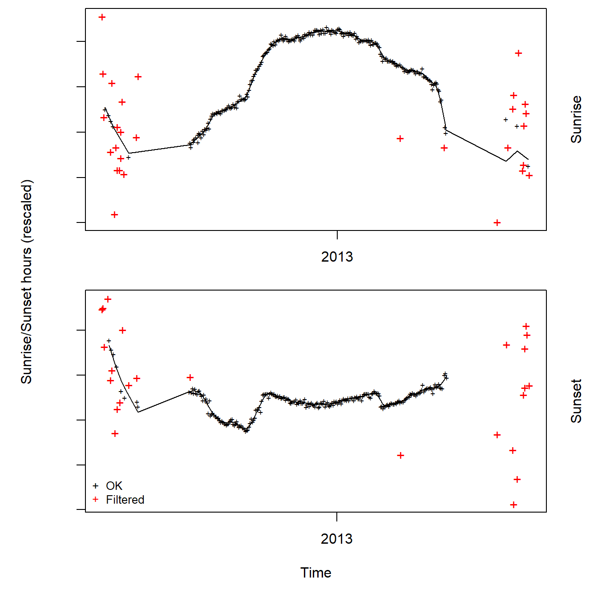
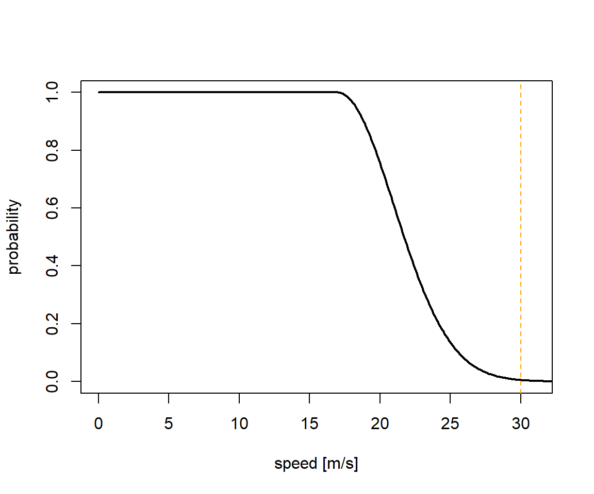
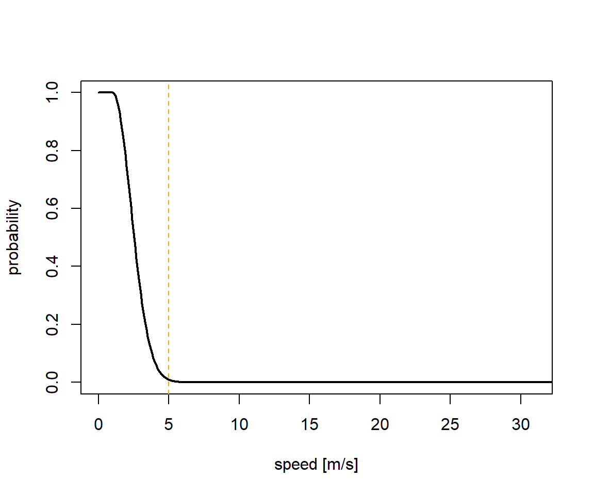

Chapter 6 probGLS
ProbGLS is an intuitive framework to compute locations from twilight events collected by geolocators from different manufacturers. The procedure uses an iterative forward step selection, weighting each possible position using a set of parameters that can be specifically selected for each analysis.
Getting started
To illustrate the probGLS analysis we use the Brünnich’s guillemot (Uria lomvia) dataset which was collected as part of the SEATRACK project (http://www.seapop.no/en/seatrack). probGLS was developed mainly for the marine realm. Here, remote sensed data are often available to help location estimation. In contrast, solar angle calibration is often challenging as many species breed at high latitudes (i.e. no twilight events during breeding) and stationary periods are not as easily definable.
 The tag used here has been developed by Lotek. No raw light intensities are stored by the logger. Instead, they estimate locations with onboard algorithms and summarises these outputs in their day log file. Additionally, these loggers record saltwater immersion every 5 minutes as well as ambient temperature at the same rate.
The tag used here has been developed by Lotek. No raw light intensities are stored by the logger. Instead, they estimate locations with onboard algorithms and summarises these outputs in their day log file. Additionally, these loggers record saltwater immersion every 5 minutes as well as ambient temperature at the same rate.
We first define the metadata and read in the raw recordings.
Species <- "UriLom"
ID <- "2655"
lat.calib <- 15.15
lon.calib <- 78.17
# define deployement and retrieval dates
start <- as.Date("2012-07-11")
end <- as.Date("2013-05-01")
wd <- "data"
raw <- read.csv(paste0(wd, "/RawData/", Species, "/", ID, ".csv"),sep=",", header = T,row.names = NULL)
raw$TimeS <- as.Date(strptime(raw$TimeS,"%d/%m/%y"))
head(raw, 2) TimeS Sunrise Sunset TFLatN TFLatS TFNoonN TFNoonS SST1 SST1Depth
1 2012-06-06 100 100.0 00:00 00:00 45 2000
2 2012-06-07 13:45 29:19 53 52.9 20:54 21:15 45 2000
SST1Time TFLatErrN TFLatErrS TFLonErrN TFLonErrS MinIntTemp WetDryChange
1 0 38.7 2.1 1.00e+06 3.7 20.08 1
2 0 15.8 12.7 2.31e+01 19.5 16.90 1
MaxPress TRLon TRLat TFLonN TFLonS X
1 0 200.0 100.0 179.7 179.7 NA
2 0 -143.2 40.6 -133.7 -139.0 NATRLon and TRLat are calculated using the threshold method and a hard coded solar angle of -3.44 degrees. Hence, if this angle does not mirror the actual solar angle, the latitudinal component of the data will of course be highly biased.
# exclude data outside deployment period
raw2 <- raw[raw$TimeS > start & raw$TimeS < end,]
# Plot threshold method derived location provided by the onboard algorithm
data(wrld_simpl)
plot(raw2$TRLon,raw2$TRLat ,type = "n", ylab="Latitude", xlab="Longitude",
xlim = c(-180, 180), ylim = c(-60, 90), bty = "n")
plot(wrld_simpl, col = "grey90", border = "grey40", add = T)
points(raw2$TRLon,raw2$TRLat, pch=16, col="cornflowerblue", type = "o")
Therefore, we back calculate times of sunrise and sunset using this angle and positional data provided by the day log file.
trn <- lotek_to_dataframe(date = raw$TimeS,
sunrise = as.character(raw$Sunrise),
sunset = as.character(raw$Sunset),
TRLat = raw$TRLat,
TRLon = raw$TRLon)
trn <- trn[!is.na(trn$tSecond),]
head(trn,2) tFirst tSecond type
1 2012-06-07 13:45:42 2012-06-08 05:18:12 1
2 2012-06-08 05:18:12 2012-06-08 07:29:15 2Now we can have a look at these calculated twilight times to see how noisy they are using the loessFilter function from GeoLight.
trn$keep <- loessFilter(trn, k = 3, plot = T)
In this example the data seems to be quite clean. However, we can see spurious twilight times during summer as well as a gap of no data whatsoever until about August and from April onwards. Reason for this pattern is the fact that the study colony is located at 78 North. Hence, it is experiencing constant day light (i.e. midnight sun) from April until the end of August. This makes it difficult to calibrate the solar angle based on a known location as this species is breeding from June to the beginning of August.
To get around this obstacle we use additional data recorded by the logger to be able to estimate a probable movement track without calibrating the solar angle.
Load additional data
Saltwater immersion data*
We use 2 additional data streams recorded by the logger. These are salt water immersion (aka wet dry) and immersion temperature.
In this example the sampling rate is every 5 minutes. However, this may differ between the actual geolocator models.
data <- read.csv(paste0(wd, "/RawData/", Species, "/", ID, "_Basic Log.csv"))
## datetime object needs to be in POSIXct, UTC time zone and must be called 'dtime'
data$dtime <- as.POSIXct(strptime(data[,1], format = "%H:%M:%S %d/%m/%y"),tz='UTC')
data <- data[!is.na(data$dtime),]
act <- data
## wet dry data column must be called 'wetdry'
act$wetdry <- 1-act$WetDryState
act <- subset(act, select = c(dtime,wetdry))
head(act) dtime wetdry
1 2012-06-08 13:44:59 0
2 2012-06-08 13:49:59 0
3 2012-06-08 13:54:59 0
4 2012-06-08 13:59:59 0
5 2012-06-08 14:04:59 0
6 2012-06-08 14:09:59 0Using this auxiliary data, we can plot the daily proportion the logger has been submerged in saltwater.
plot(unique(as.Date(act$dtime)), tapply(act$wetdry,as.Date(act$dtime),sum)/288,
type="l",col=grey(0.5),ylab="daily proportion of saltwater immersion")
points(unique(as.Date(act$dtime)),tapply(act$wetdry,as.Date(act$dtime),sum)/288,
pch=19,cex=0.8)
The here shown proportion, the logger is immersed in salt water each day can be used to estimate behaviour states of the individual tracked (e.g. sitting on water or flying). Additionally, the movement speed of a bird on or in water is not as high as when it is airborne, allowing us to define 2 speed distributions: One for when the logger is dry and one for when the logger is wet. The first should be informed by the ecology of the study species. In our example we can use speed estimates from GPS tracking studies to define a speed distribution.
speed_dry = c(17, 4, 30)
sd <- data.frame(speed=seq(0,35,0.1),prob=dnorm(seq(0,35,0.1),speed_dry[1],speed_dry[2]))
sd$prob <- sd$prob/max(sd$prob)
sd$prob[sd$speed<speed_dry[1]] <- 1
plot(sd,type="l",xlim=c(0,31),xlab="speed [m/s]",ylab="probability",lwd=2)
abline(v=speed_dry[3],lty=2,col="orange")
The movement speed of an animal when wet can be defined using current speeds from ocean currents in the part of the globe you assume the animal to be in. In our example this is the North Atlantic current and the fast East Greenland current.
speed_wet = c(1, 1.3, 5)
sd <- data.frame(speed=seq(0,35,0.1),prob=dnorm(seq(0,35,0.1),speed_wet[1],speed_wet[2]))
sd$prob <- sd$prob/max(sd$prob)
sd$prob[sd$speed<speed_wet[1]] <- 1
plot(sd,type="l",xlim=c(0,31),xlab="speed [m/s]",ylab="probability",lwd=2)
abline(v=speed_wet[3],lty=2,col="orange")
Immersion temperature data
In this example the sampling rate is every 5 minutes. This differs between logger models and brands.
td <- data
## only keep temperature values when the logger was immersed in salt water
## and if the 3 previous readings have been recorded while immersed in sea water as well
td$WetDryState.before <- c(NA,head(td$WetDryState,-1))
td$WetDryState.before.2 <- c(NA,NA,head(td$WetDryState,-2))
td$WetDryState.before.3 <- c(NA,NA,NA,head(td$WetDryState,-3))
td <- td[td$WetDryState ==0 &
td$WetDryState.before ==0 &
td$WetDryState.before.2==0 &
td$WetDryState.before.3==0,]
## determine daily SST value recorded by the logger
sst <- sst_deduction(datetime = td$dtime, temp = td$IntTemp, temp.range = c(-2,19))
abline(h=c(-2,19),lty=2,col="orange")
In grey you can see the temperature values recorded by the tag. In black is the estimated daily sea surface temperature (SST) values determined from the algorithm. All red data points are labeled as “remove”. Here, data is conservativly removed rather than smoothed out or interpolated as temperature can often shift rather dramatically, especially when an individual is utilizing an oceanographic front. For removed values no SST data will be used to improve the location estimation algorithm.
head(sst) date SST SST.remove
2012-07-11 2012-07-11 5.290 FALSE
2012-07-12 2012-07-12 4.340 FALSE
2012-07-13 2012-07-13 4.475 FALSE
2012-07-14 2012-07-14 5.225 FALSE
2012-07-15 2012-07-15 4.815 FALSE
2012-07-16 2012-07-16 3.515 FALSEDownload remote sensed environmental data
Now, we need remote sensed SST fields to fit the deduced SST values recorded by the logger with what was available in the environment. Here we use one of many remote sensed data products. The strength of this product is the long temporal time scale (1981 - now) coupled with a reasonable spatial resolution of 0.25 x 0.25 degrees.
# download environmental data ----
# download yearly NetCDF files for (replace YEAR with appropriate number):
# daily mean SST -> 'sst.day.mean.YEAR.nc'
# daily SST error -> 'sst.day.err.YEAR.nc'
# daily mean sea ice concentration -> 'icec.day.mean.YEAR.nc'
# from:
# https://www.esrl.noaa.gov/psd/data/gridded/data.noaa.oisst.v2.highres.html
# and place all in the same folder (here we use a AuxiliaryData in the RawData folder of the species)
# Also, download the land mask file: 'lsmask.oisst.v2.nc' from the same directory
# and place it in the same folder as all the other NetCDF filesTwilight error (Calibration)
Here we estimate the assumed error around a twilight event as log-normal distribution. The parameters used here are chosen as they resemble the twilight error structure of open habitat species.
tw <- twilight_error_estimation(shape = 2.49, scale = 0.94, delay = 0)
Run the iterative algorithm
Finally, all pieces are in place and we can run the iterative algorithm.
pr <- prob_algorithm(trn = trn,
sensor = sst[sst$SST.remove==F,],
act = act,
tagging.date = start,
retrieval.date = end,
loess.quartile = NULL,
tagging.location = c(lon.calib, lat.calib),
particle.number = 500,
iteration.number = 100,
sunrise.sd = tw,
sunset.sd = tw,
range.solar = c(-7,-1),
speed.wet = speed_wet,
speed.dry = speed_dry,
sst.sd = 0.5,
max.sst.diff = 3,
boundary.box = c(-90,120,40,90),
days.around.spring.equinox = c(21,14),
days.around.fall.equinox = c(14,21),
ice.conc.cutoff = 0.9,
land.mask = T, # The track is assumed not to be on land
med.sea = F, # if T the track cannot enter the Mediterranean Sea
black.sea = F, # if T the track cannot enter the Black Sea
baltic.sea = F, # if T the track cannot enter the Baltic Sea
caspian.sea = F, # if T the track cannot enter the Caspian Sea
east.west.comp = F, # if true use the east west compensation (see Biotrack manual)
wetdry.resolution = 300, # in seconds, i.e. 5 minutes = 300 seconds
NOAA.OI.location = paste0(wd, "/RawData/", Species, "/AuxiliaryData"))
## loess.quartile - if it is not NULL then the GeoLight loessFilter function is used previous to running the iterations
## particle.number - number of particles generated at each step
## range.solar - range of solar angles assumed
## sst.sd - accuracy of the logger temperature sensor
## max.sst.diff - maximum discrepancy allowed between recorded and remote sensed SST
## boundary.box - spatial extent
## ice.conc.cutoff - the animal is not assumed to enter pixels with more than 90% sea ice concentrationThe data object created is a list containing 5 parts:
summary(pr) Length Class Mode
all tracks 43767 SpatialPointsDataFrame S4
most probable track 442 SpatialPointsDataFrame S4
all possible particles 221966 SpatialPointsDataFrame S4
input parameters 2 data.frame list
model run time 1 difftime numeric- The first item contains all 100 tracks computed by the algorithms.
- The second item contains the most probable track as geographic median at each step.
- The third item contains all generates particles at each step.
- The fourth item stores all input parameter.
- The last item is just the time it took to run the algorithm (17 minutes in this example).
Plot results
# plot lat, lon, SST vs time ----
plot_timeline(pr,degElevation = NULL)
# plot lon vs lat map ----
plot_map(pr)
Here, the most probable track is displayed from yellow to dark red with its uncertainty in grey (light to dark). The colony location is visualised at violet square. Locations estimated around the equinox periods are marked with a cross.
The median track as well as its associated uncertainty can now be used in further analyses.